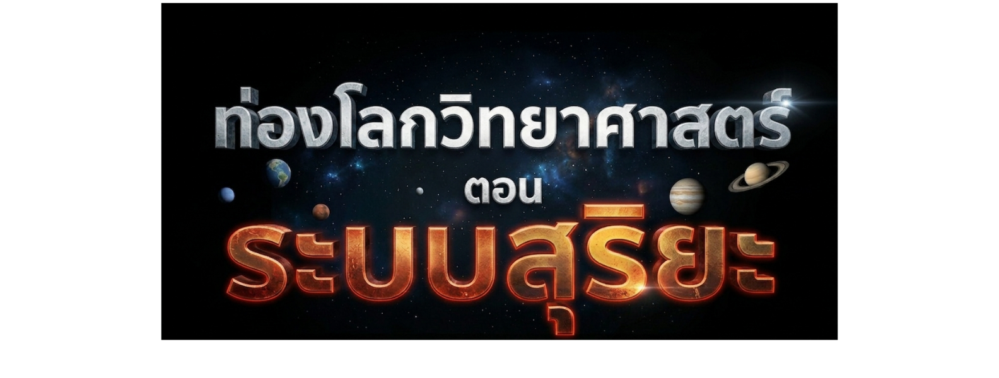
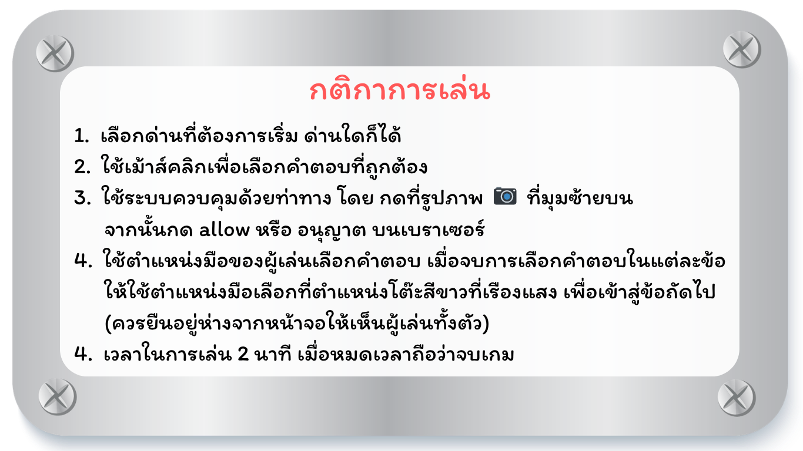

❮
ข้อมูล
ข้อมูลพื้นฐาน🌑
ลักษณะ🛰️
วงโคจร🪐
❯
✕
NEXT

เข้าสู่เกม
ระบบสุริยะ
ตอบคำถามระบบสุริยะ
กติกาการเล่น 📖
ภารกิจ : สำรวจระบบสุริยะ
เริ่ม
3

เมนูหลัก
หน้าหลัก
⏸ หยุด
📷: ปิด
คะแนน
0
02:00
🏆
หมดเวลา
คะแนน
0
เริ่มใหม่
กลับสู่หน้าหลัก
🔊
⛶
กำลังเตรียมข้อมูล… 0%
...รอสักครู่...